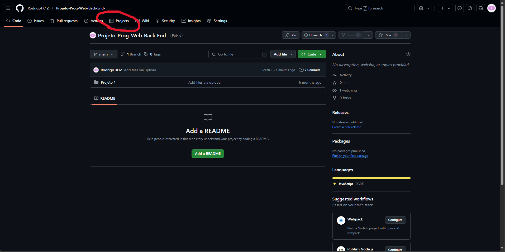
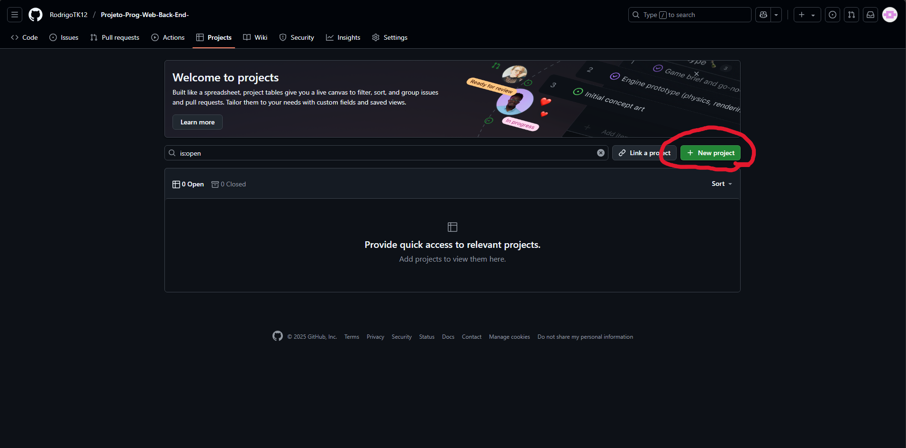
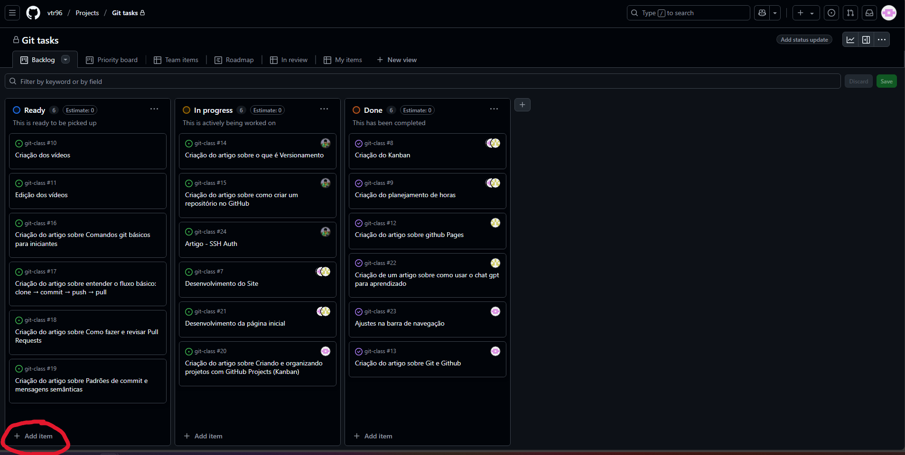
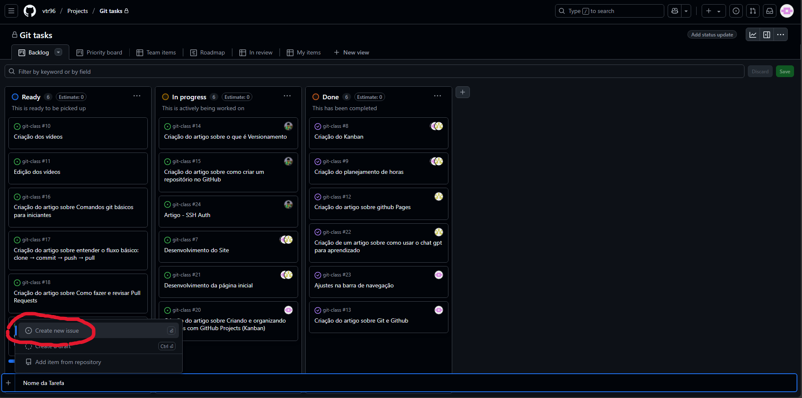
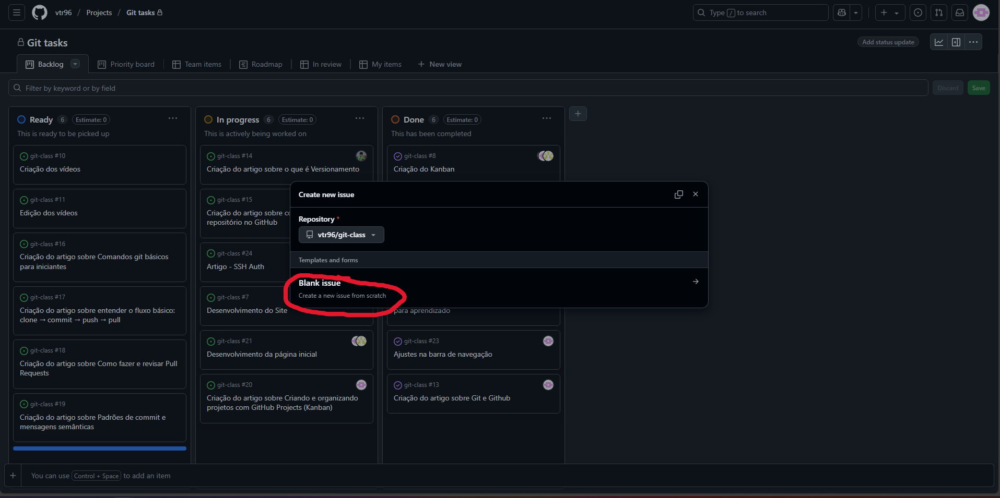
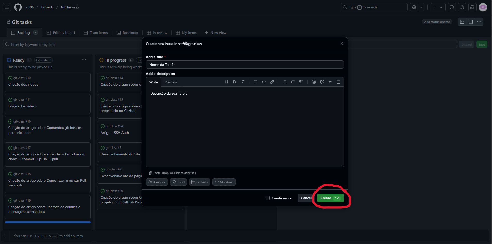

Criando e Organizando Projetos com GitHub Projects (Kanban)
O que é o GitHub Projects?
O GitHub Projects é uma funcionalidade integrada ao GitHub que permite gerenciar tarefas e acompanhar o progresso do desenvolvimento de um projeto por meio de quadros no estilo Kanban.
Vantagens de usar o GitHub Projects
Visualização clara das tarefas em andamento
Integração direta com Issues e Pull Requests
Organização por colunas como Ready, In progress e Done
Controle colaborativo e atualizações em tempo real
Ideal para aplicar metodologias ágeis como Scrum e Kanban
Passo a passo: Criando seu primeiro Project
Acesse o repositório no GitHub.
Clique em Projects no menu superior.

Selecione New Project.

Dê um nome ao projeto e escolha o template "Kanban".
Clique em Create Project.
Adicionando colunas
Por padrão, o GitHub cria cinco colunas: Backlog, Ready, In progressIn review e Done.
Você pode renomear, remover ou adicionar colunas conforme a necessidade do seu time.
Adicionando cartões
Cada coluna pode conter cartões que representam tarefas.
Você pode criar um cartão manualmente ou adicionar uma Issue existente.
Também é possível converter um cartão em uma Issue posteriormente.

Integração com Issues e Pull Requests
Uma das grandes vantagens do GitHub Projects é a integração direta com outras funcionalidades do GitHub:
Ao criar uma Issue, você pode vinculá-la a um quadro e a uma coluna.
Quando um Pull Request é aberto para resolver uma Issue, o cartão pode ser movido automaticamente.
Isso mantém o fluxo de trabalho atualizado sem esforço manual.



Dica de uso para equipes pequenas
Mesmo em projetos pessoais ou em equipes reduzidas, usar o GitHub Projects ajuda a:
Evitar tarefas esquecidas
Organizar prioridades
Documentar o que foi feito ao longo do tempo
Conclusão
O GitHub Projects é uma solução prática e eficiente para organizar tarefas de desenvolvimento. Ele elimina a necessidade de ferramentas externas e mantém tudo dentro do ambiente do GitHub.
Ideal para estudantes, desenvolvedores solo e equipes ágeis.